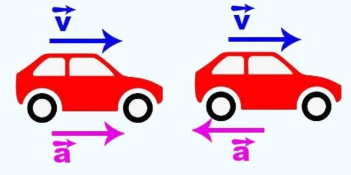

Aceleração
A aceleração é um conceito muito importante na física, ela é a variação da velocidade de um corpo. Em outras palavras, a aceleração é uma grandeza vetorial que indica a variação da velocidade de um corpo no tempo. No caso do módulo da aceleração ser constante, o movimento será uniformemente variado (MUV).
Dessa maneira, quando há aumento da velocidade instantânea, o movimento é acelerado e, quando há diminuição da velocidade instantânea, o movimento é retardado.
Aceleração Escalar Média:
A Aceleração Escalar Média (am) representa a variação da velocidade em determinado intervalo de tempo e, consequentemente, da aceleração adquirida por esse corpo, expressa pela fórmula:
Onde:
ΔV: Variação da velocidade (ΔV = Vf – Vi), velocidade final menos a inicial.
Δt: Variação do tempo (Δt = Tf – Ti), tempo final menos tempo inicial.
Importante destacar que no Sistema Internacional de Unidades (SI), a unidade de medida da velocidade é o metro por segundo (m/s) enquanto o tempo é expresso em segundos (s). Por esse motivo, a unidade de aceleração média no SI é m/s2.
Aceleração Escalar Instantânea:
Diferente da Aceleração Escalar Média, a Aceleração Escalar Instantânea descreve a aceleração de um corpo em determinado instante. Para determinar a aceleração instantânea, é considerado um intervalo de tempo tão pequeno que dizemos tender a 0. Isto significa que calculamos a aceleração no limite em que delta t tende a zero incremento Δt → 0.
Aceleração Centrípeta:
A aceleração centrípeta ocorre em movimentos curvilíneos, ou seja, em curvas, devido à mudança na direção do vetor velocidade. Como a aceleração é uma grandeza vetorial, possui direção e sentido, além do módulo (valor). A direção do vetor aceleração centrípeta é perpendicular ao vetor velocidade, 90º. Já o sentido aponta para o centro da trajetória. O módulo da aceleração centrípeta é obtido pela razão entre a velocidade escalar do móvel ao quadrado e o raio da trajetória.
A fórmula da aceleração centrípeta é:
Onde:
acd é o módulo (valor) da aceleração centrípeta (m/s²),
S é a velocidade escalar (m/s),
R é o raio de curvatura (m).